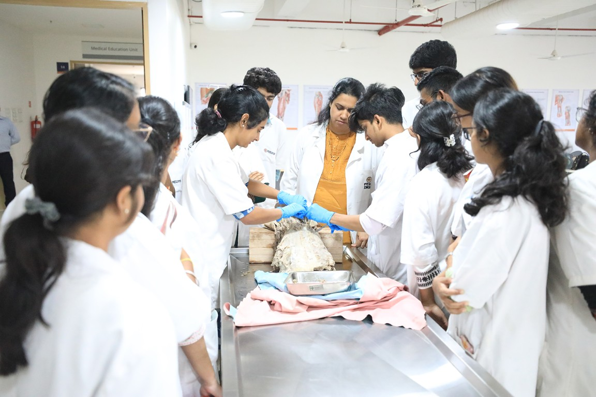
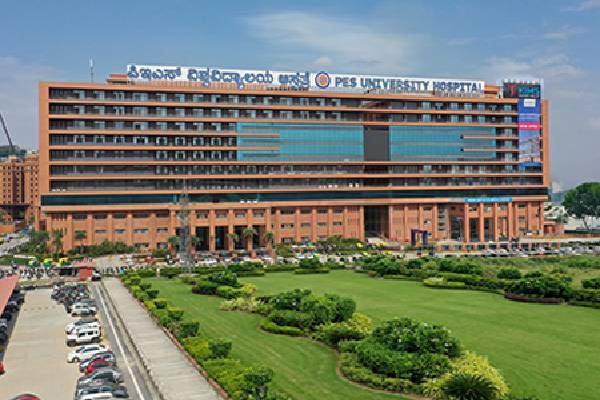
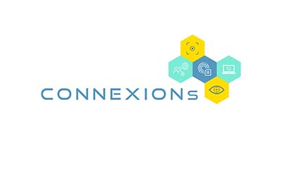
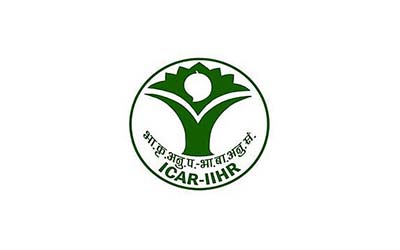
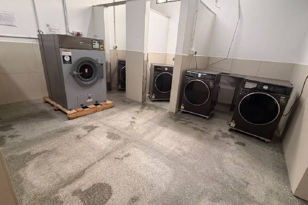

Get In Touch
Have questions about Bachelor of Science (B.Sc) in Nursing admissions?
Share a few details and our admissions counsellors will walk you through eligibility, fees, scholarships and the application timeline — no obligation.
- Fast Response — a counsellor calls back within 24 hours.
- One-on-One Guidance — personalised help with eligibility and documentation.
- No Obligation — ask questions before you decide to apply.
Fill this in and we'll reach out shortly.
Overview
Bachelor of Science (B.Sc) in Nursing
Bachelor of Science (B.Sc) in Nursing
The B.Sc. nursing degree program is a four-year fulltime program comprising eight semesters, which prepares B.Sc. nursing graduates qualified to practice nursing and midwifery in a variety of settings in either public/government or private healthcare settings.
It adopts credit system and semester system as per the Authority guidelines. The program encompasses foundational, core and elective courses.This is achieved through learning in skill lab/simulated lab and clinical environment. Simulation will be integrated throughout the curriculum wherever feasible to enable them to develop competencies before entry into real field of practice.
The aims of the B.Sc. Nursing program are to produce knowledgeable and competent nurses and midwives with critical thinking, caring, motivation, assertiveness, and discipline; prepare them to provide promotive, preventive, curative, and rehabilitative healthcare services in all healthcare settings; enable them to make independent decisions within their scope of practice, protect individual and group rights, conduct nursing research, and apply evidence-based practice; and prepare them for roles as practitioners, teachers, supervisors, and managers.
Nursing as a profession and a discipline utilizes knowledge derived from arts, sciences (physical, biological and behavioral), humanities and human experience. Nursing science incorporates clinical competence, critical thinking, communication, teaching learning, professionalism, and caring and cultural competency. Nurses collaborate with other health disciplines to solve individual and community health problems. Nursing facilitates evidence-based practice, compassionate caring among its practitioners in response to emerging issues in healthcare and new discoveries and technologies in profession. Nursing practice requires personal commitment to professional development and life-long learning.
Simulation will be integrated throughout the curriculum wherever applicable to enable them to develop competencies before entry into real field of practice. B.Sc nursing provides nurses with excellent career prospects and employment opportunities.



About the Programme
Objectives of the Program
- To develop critical thinking, clinical reasoning and professional competence for the provision of safe, effective and patient-centred nursing care.
- To develop the ability to apply evidence and research findings in nursing practice and quality improvement.
- To prepare competent, ethical and accountable professional nurses to provide holistic, safe and evidence-based care across diverse healthcare settings.
- To promote lifelong learning, continuing professional development, self-reflection and professional growth.
- To develop leadership, clinical decision-making, communication, teamwork and collaboration skills for effective professional practice.
- To demonstrate effective communication and collaborative practice with patients, families and members of the healthcare team.
- To promote patient safety, quality improvement and ethical professional nursing practice.
- To use health information, technology and appropriate digital resources to support nursing practice and learning.
About the Programme
Eligibility Criteria
- The candidate must be at least 17 years of age as on 31 December of the year of admission. The maximum age limit for admission is 35 years.
- The candidate must have passed Physics, Chemistry, Biology and English individually at the 10+2/II PUC level. and must have obtained a minimum of 45% aggregate marks in Physics, Chemistry and Biology (PCB) is required in the qualifying examination.
- Candidates belonging to SC/ST/OBC categories shall meet the applicable minimum PCB eligibility criteria as prescribed by affiliated regulatory bodies and the applicable government reservation/admission policy. 6 papers together in the qualifying examination.
- The candidate must be medically fit.
Why PES University
Key differentiators of this program at PESU
How We Teach
Pedagogy Method
Classroom & Interactive Learning
Skill Laboratory & Simulation
Clinical Education
Digital & Self-Directed Learning
Assessment & Competency Evaluation
Curriculum
Physical Infrastructure
I. Academic Facilities
- Lecture Hall
- Skill Lab/Simulation Laboratory
- Nursing Foundation including Adult Health Nursing & Advanced Nursing Lab
- Community Health Nursing & Nutrition Lab
- Obstetrics and Gynaecology Nursing Lab
- Child Health Nursing Lab
- Pre-Clinical Science Lab
- Computer Lab
- A.V. Aids Room
- Multipurpose Hall
- Library
II. Clinical Facilities
- PES University Institute of Medical Science and Research — Learn Where Healthcare Happens. With our own 1250-bedded parent hospital on campus, students gain unparalleled exposure to diverse clinical experiences.
- Outreach Program - Urban and Rural Primary Health Centre
III. Recreational Facilities
- Gym
- Yoga
- Racquet Sports
About the Programme
Excellent Hostel Facilities




Programme Highlights & Opportunities
Patient centered care
Provide holistic care recognizing individual patient's preferences, values and needs, that is compassionate, coordinated, age and culturally appropriate safe and effective care.
Professionalism
Demonstrate accountability for the delivery of standard-based nursing care as per the Council standards that is consistent with moral, altruistic, legal, ethical, regulatory and humanistic principles.
Teaching & Leadership
Influence the behavior of individuals and groups within their environment and facilitate establishment of shared goals through teaching and leadership.
System-based practice
Demonstrate awareness and responsiveness to the context of healthcare system and ability to manage resources essential to provide optimal quality of care.
Health informatics and Technology
Use technology and synthesize information and collaborate to make critical decisions that optimize patient outcomes.
Communication
Interact effectively with patients, families and colleagues fostering mutual respect and shared decision making to enhance patient satisfaction and health outcomes.
Teamwork and Collaboration
Function effectively within nursing and interdisciplinary teams, fostering open communication, mutual respect, shared decision making, team learning and development.
Safety
Minimize risk of harm to patients and providers through both system effectiveness and individual performance.
Quality improvement
Use data to monitor the outcomes of care processes and utilize improvement methods to design and test changes to continuously improve the quality and safety of healthcare system.
Evidence based practice
Identify, evaluate and use the best current evidence coupled with clinical expertise and consideration of patient's preferences, experience and values to make practical decisions.
Who should pursue this program?
- Students interested in a professional career in nursing and healthcare may consider the B.Sc. Nursing programme.
- Students motivated to contribute to patient care, health promotion, disease prevention and community wellbeing may find nursing a suitable career.
- Students who value compassionate, respectful, ethical and patient-centred care.
- Students willing to develop clinical skills through laboratory, simulation and supervised clinical practice.
- Students interested in communication, teamwork, leadership and lifelong professional learning.
- Candidates who want to take up jobs as Nursing Advisors to the Indian Government, Supervisors, Teachers and Nursing Superintendents, Clinical nurse in government or private hospitals, clinics and other health departments. Nurse educators in nursing colleges, training institute’s hospitals, etc. Nurse researchers in research institutes and health care companies and Nurse Managers or administrators in hospitals, IT nurses in IT sector.
Future Career Prospects after Completing the B.Sc. Nursing Program
On completion of the B.Sc nursing programme the graduates can have following career opportunities open to them:
Hospitals & Clinical Healthcare
- Staff Nurse / Clinical Nurse
- Critical Care Nurse
- Emergency & Trauma Nurse
- Operation Theatre Nurse
- Medical-Surgical Nurse
- Paediatric Nurse
- Obstetric & Gynaecological Nurse
- Oncology Nurse
- Cardiac Care Nurse
- Dialysis Nurse
- Infection Control Nurse
- Nurse Educator
School Health Services
- School Health Nurse
- School Wellness & Health Promotion Roles
- Student Health Services
Industrial & Occupational Health
- Occupational Health Nurse
- Industrial Health Nurse
- Corporate Wellness Roles
- Workplace Health & Safety Services
Public & Community Health
- Public Health Nurse
- Community Health Nurse
- Primary Healthcare Services
- National Health Programme Roles
- Community Outreach & Health Promotion
Nursing Education
- Nursing Tutor
- Clinical Instructor
- Skills Lab Instructor
- Simulation-Based Nursing Education
Research & Quality
- Nursing Research Roles
- Clinical Research Roles
- Healthcare Quality & Patient Safety
- Clinical Audit & Accreditation Support
Digital Health & Healthcare Technology
- Health Informatics Nurse
- Digital Health Roles
- Telehealth / Telemedicine Nurse
- Electronic Health Record (EHR) Roles
- Clinical Data & Information Management
Healthcare Management & Other Services
- Nursing Administration
- Patient Care Coordinator
- Home Healthcare Nurse
- Healthcare Programme Coordinator
- NGO & Healthcare Organization Roles
Placement Opportunities , Career Development & Assistance
PES University provides dedicated placement and career support to nursing students through its centralized placement system, helping them confidently transition from undergraduate education to professional nursing practice. The placement cell at PES University
Career Guidance & Orientation
Students receive guidance on diverse career pathways in clinical nursing, community health, nursing education, management, research and other healthcare settings. Regular career-orientation programmes help students understand evolving healthcare workforce expectations, employer requirements and professional opportunities.
Employability Development
Students are supported in developing professional communication, interpersonal, interview and workplace-readiness skills essential for a successful career in healthcare. Training and guidance help students understand professional expectations and prepare effectively for recruitment and workplace environments.
Placement Assistance
The University facilitates access to relevant employment opportunities with hospitals, healthcare organizations and other appropriate employers. Placement support includes career information and connections with potential employers, subject to organizational requirements, vacancies and selection processes.
Financial Support
Merit scholarships, awarded on performance
Over ₹140 crores in merit scholarships have been given to PES University students since 2014.
Merit Scholarships
Awarded on CGPA / SGPAProf. MRD Scholarships
Merit Certificate + 50% Tuition Fee Refund for Top 5% of the Students based on their CGPA.
Prof. CNR Rao Scholarships
Merit Certificate + 40% Tuition Fee Refund for the next 20% of the Students based on their SGPA.
Distinction Awards
Merit Certificate for Students securing 7.75+ SGPA.
PES Loyalty Program
Awarded on family / institutional ties, every year of studyPES Employees
Children of full-time staff, 5+ years employment.
PES Institution Students
Graduates of any PES institution or sister concern.
Siblings of Students
Siblings of currently enrolled PES students.
Alumni Family
Siblings and children of PES University alumni.
University Highlights
Recognition beyond the programme
The accreditations and rankings behind PES University as a whole.
University in Karnataka
Among new universities under 5 years, ranked by KSURF.
NAAC Accredited
PES University holds NAAC's top-grade accreditation nationally.
B-School in Karnataka
Times of India B-School Rankings, 2021.
Most Preferred B-School
Second only to IIM Bangalore among B-School aspirants, per Times of India.